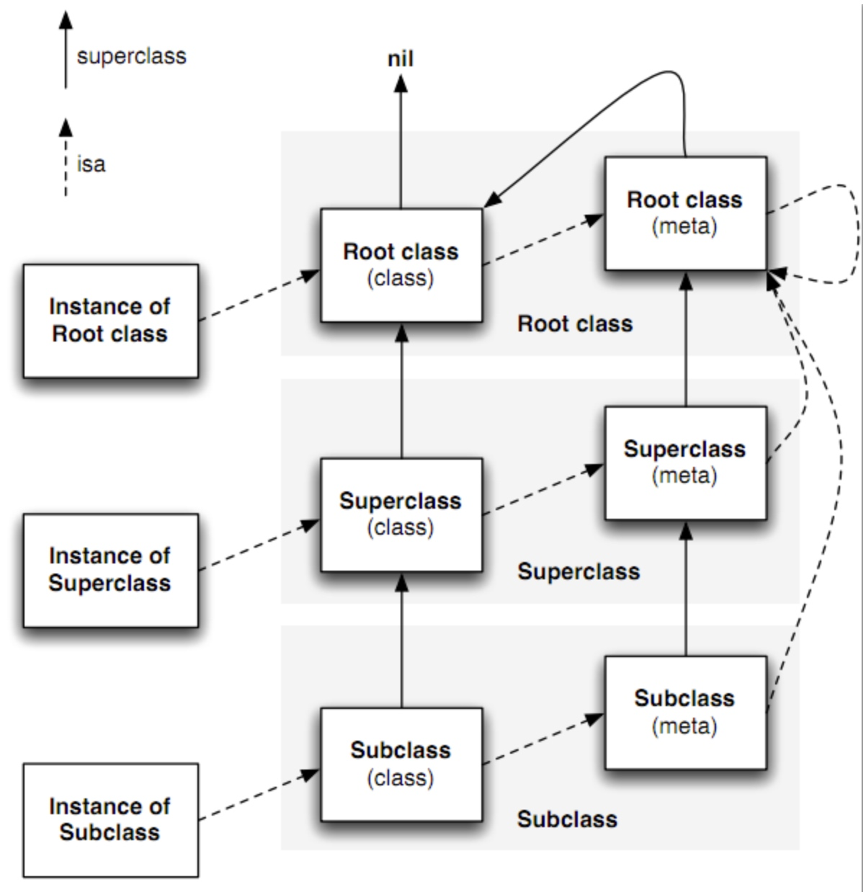

一、什么是 KVO？（Key-VauleObserving）
KVO 是 OC 对观察者模式的实现，也是 CocoaBinding 的基础，当被观察的对象的某个属性发生改变的时候，观察者对象就会获得通知
面试题：
addObserver:forKeyPath:options:context:各个参数的作用分别是什么, observer中需要实现哪个方法才能获得KVO回调？
**
1. self.person：要监听的对象
2. 参数说明：
* @param addObserver 观察者，负责处理监听事件的对象
* @param forKeyPath 要监听的属性
* @param options 观察的选项（观察新、旧值，也可以都观察）
* @param context 上下文，用于传递数据，可以利用上下文区分不同的监听
*/
[self.person addObserver:self
forKeyPath:@"name"
options:NSKeyValueObservingOptionNew | NSKeyValueObservingOptionOld
context:@"Person Name"];
/**
* 当监控的某个属性的值改变了就会调用
*
* @param keyPath 监听的属性名
* @param object 属性所属的对象
* @param change 属性的修改情况（属性原来的值`oldValue`、属性最新的值`newValue`）
* @param context 传递的上下文数据，与监听的时候传递的一致，可以利用上下文区分不同的监听
*/
- (void)observeValueForKeyPath:(NSString *)keyPath ofObject:(id)object change:(NSDictionary *)change context:(void *)context
{
NSLog(@"%@对象的%@属性改变了：%@", object, keyPath, change);
}
二、KVO 内部实现原理
官方文档的说法：
Automatic key-value observing is implemented using a technique called isa-swizzling.
KVO使用了名为isa-swizzling的技术
The isa pointer, as the name suggests, points to the object's class which maintains a dispatch table. This dispatch table essentially contains pointers to the methods the class implements, among other data.
isa指针指向一个对象的类,这个类包含了一个方法派发表
When an observer is registered for an attribute of an object the isa pointer of the observed object is modified, pointing to an intermediate class rather than at the true class. As a result the value of the isa pointer does not necessarily reflect the actual class of the instance.
被观察对象的isa指针会被修改,指向一个中间类,而非真实的类.isa指针的值并不必须反应实例对象的真实对应的类
You should never rely on the isa pointer to determine class membership. Instead, you should use the class method to determine the class of an object instance.
因而,应该调用对象的class方法来确定实例对应的类而不是isa指针的值
KVO 是基于 runtime 机制实现的。
KVO 运用了一个 isa-swizzling 技术（类型混合指针机制），将两个对象的 isa 指针互相调换，就是俗称的黑魔法。
当某个类的对象 第一次被观察 的时候，系统就会在运行期动态的创建该类的一个派生类， 在这个派生类中重写基类中任何被观察属性的 setter 方法，派生类在被重写的 setter 方法内部实现真正的通知机制。
如果原类为Person，那么生成的派生类名为NSKVONotifying_Person
每个类对象中都有一个isa 指针指向当前类，当一个类对象的属性第一次被观察，那么系统就会将 isa 指针指向动态生成的派生类，从而在给被监控的属性赋值的时候执行的是派生类的 setter 方法。
键值观察通知（KVO）依赖于 NSObject 的两个方法：
willChangeValueForKey: 和 didChangevlueForKey：
当一个被观察的属性发生改变之前，willChangeValueForKey： 一定会被调用，这就会记录旧值，当发生改变之后，didChangevlueForKey：会被调用，继而observeValueForKey:ofObject:change:context: 也会被调用。
KVO 的这套实现机制中，苹果还偷偷实现了 class 方法，让我们误以为使用的还是当前的类，从而达到隐藏派生类的目的

三，如何手动触发 KVO
手动触发 KVO 必须实现两个方法：
willChangeValueForKey:和didChangeValueForKey:
- 如何自己动手实现 KVO？
1，Block 模拟实现 KVO
大体步骤：
1，创建 NSObject 的分类，增加添加观察者的 API，并实现
- (void)PG_addObserver:(NSObject *)observer
forKey:(NSString *)key
withBlock:(PGObservingBlock)block {
//检查对象的类有没有相应的 setter 方法。如果没有抛出异常；
SEL setterSelector = NSSelectorFromString(setterForGetter(key));
Method setterMethod = class_getInstanceMethod([self class], setterSelector);
if (!setterMethod) {
// throw invalid argument exception
}
Class clazz = object_getClass(self);
NSString *clazzName = NSStringFromClass(clazz);
// 检查对象 isa 指向的类是不是一个 KVO 类。如果不是，新建一个继承原来类的子类，并把 isa 指向这个新建的子类；
if (![clazzName hasPrefix:kPGKVOClassPrefix]) {
clazz = [self makeKvoClassWithOriginalClassName:clazzName];
object_setClass(self, clazz);
}
// 检查对象的 KVO 类重写过没有这个 setter 方法。如果没有，添加重写的 setter 方法；
// hasn't implemented the setter
if (![self hasSelector:setterSelector]) {
const char *types = method_getTypeEncoding(setterMethod);
class_addMethod(clazz, setterSelector, (IMP)kvo_setter, types);
}
// 添加这个观察者
PGObservationInfo *info = [[PGObservationInfo alloc] initWithObserver:observer Key:key block:block];
NSMutableArray *observers = objc_getAssociatedObject(self, (__bridge const void *)(kPGKVOAssociatedObservers));
if (!observers) {
observers = [NSMutableArray array];
objc_setAssociatedObject(self, (__bridge const void *)(kPGKVOAssociatedObservers), observers, OBJC_ASSOCIATION_RETAIN_NONATOMIC);
}
[observers addObject:info];
}
再来一步一步细看。
第一步里，先通过 setterForGetter() 方法获得相应的 setter 的名字（SEL）。也就是把 key 的首字母大写，然后前面加上 set 后面加上 :，这样 key 就变成了 setKey:。然后再用 class_getInstanceMethod 去获得 setKey: 的实现（Method）。如果没有，自然要抛出异常。
第二步，我们先看类名有没有我们定义的前缀。如果没有，我们就去创建新的子类，并通过 object_setClass() 修改 isa 指针。
- (Class)makeKvoClassWithOriginalClassName:(NSString *)originalClazzName {
NSString *kvoClazzName = [kPGKVOClassPrefix stringByAppendingString:originalClazzName];
Class clazz = NSClassFromString(kvoClazzName);
if (clazz) {
return clazz;
}
// class doesn't exist yet, make it
Class originalClazz = object_getClass(self);
Class kvoClazz = objc_allocateClassPair(originalClazz, kvoClazzName.UTF8String, 0);
// grab class method's signature so we can borrow it
Method clazzMethod = class_getInstanceMethod(originalClazz, @selector(class));
const char *types = method_getTypeEncoding(clazzMethod);
class_addMethod(kvoClazz, @selector(class), (IMP)kvo_class, types);
objc_registerClassPair(kvoClazz);
return kvoClazz;
}
动态创建新的类需要用 objc/runtime.h 中定义的 objc_allocateClassPair() 函数。传一个父类，类名，然后额外的空间（通常为 0），它返回给你一个类。然后就给这个类添加方法，也可以添加变量。这里，我们只重写了 class 方法。哈哈，跟 Apple 一样，这时候我们也企图隐藏这个子类的存在。最后 objc_registerClassPair() 告诉 Runtime 这个类的存在。
第三步，重写 setter 方法。新的 setter 在调用原 setter 方法后，通知每个观察者（调用之前传入的 block ）：
static void kvo_setter(id self, SEL _cmd, id newValue)
{
NSString *setterName = NSStringFromSelector(_cmd);
NSString *getterName = getterForSetter(setterName);
if (!getterName) {
// throw invalid argument exception
}
id oldValue = [self valueForKey:getterName];
struct objc_super superclazz = {
.receiver = self,
.super_class = class_getSuperclass(object_getClass(self))
};
// cast our pointer so the compiler won't complain
void (*objc_msgSendSuperCasted)(void *, SEL, id) = (void *)objc_msgSendSuper;
// call super's setter, which is original class's setter method
objc_msgSendSuperCasted(&superclazz, _cmd, newValue);
// look up observers and call the blocks
NSMutableArray *observers = objc_getAssociatedObject(self, (__bridge const void *)(kPGKVOAssociatedObservers));
for (PGObservationInfo *each in observers) {
if ([each.key isEqualToString:getterName]) {
dispatch_async(dispatch_get_global_queue(DISPATCH_QUEUE_PRIORITY_DEFAULT, 0), ^{
each.block(self, getterName, oldValue, newValue);
});
}
}
}
细心的同学会发现我们对 objc_msgSendSuper 进行类型转换。在 Xcode 6 里，新的 LLVM 会对 objc_msgSendSuper 以及 objc_msgSend 做严格的类型检查，如果不做类型转换。Xcode 会抱怨有 too many arguments 的错误。（在 WWDC 2014 的视频 What new in LLVM 中有提到过这个问题。）
最后一步，把这个观察的相关信息存在 associatedObject 里。观察的相关信息（观察者，被观察的 key, 和传入的 block ）封装在 PGObservationInfo 类里。
@interface PGObservationInfo : NSObject
@property (nonatomic, weak) NSObject *observer;
@property (nonatomic, copy) NSString *key;
@property (nonatomic, copy) PGObservingBlock block;
@end
就此，一个基本的 KVO 就可以 work 了。当然，这只是一个一天多做出来的小东西，会有 bug，也有很多可以优化完善的地方。但作为 demo 演示如何利用 Runtime 动态创建类、如何实现 KVO，足已。
- KVO 使用注意点
苹果提供的KVO自身存在很多问题，首要问题在于，KVO如果使用不当很容易崩溃。例如重复add和remove导致的Crash，Observer被释放导致的崩溃，keyPath传错导致的崩溃等。
在调用KVO时需要传入一个keyPath，由于keyPath是字符串的形式，所以其对应的属性发生改变后，字符串没有改变容易导致Crash。我们可以利用系统的反射机制将keyPath反射出来，这样编译器可以在@selector()中进行合法性检查。
KVO是一种事件绑定机制的实现，在keyPath对应的值发生改变后会回调对应的方法。这种数据绑定机制，在对象关系很复杂的情况下，很容易导致不好排查的bug。例如keyPath对应的属性被调用的关系很复杂，就不太建议对这个属性进行KVO，可以想一下RAC的信号脑补一下。
KVC 是什么
KVC（Key-value coding）键值编码，就是指iOS的开发中，可以允许开发者通过Key名直接访问对象的属性，或者给对象的属性赋值。而不需要调用明确的存取方法。这样就可以在运行时动态地访问和修改对象的属性。而不是在编译时确定，这也是iOS开发中的黑魔法之一。很多高级的iOS开发技巧都是基于KVC实现的。
KVC最为重要的四个方法：
- (nullable id)valueForKey:(NSString *)key; //直接通过Key来取值
- (void)setValue:(nullable id)value forKey:(NSString *)key; //通过Key来设值
- (nullable id)valueForKeyPath:(NSString *)keyPath; //通过KeyPath来取值
- (void)setValue:(nullable id)value forKeyPath:(NSString *)keyPath; //通过KeyPath来设值
isa 指针是什么类型的？
runtime 中，class 和 object 的定义：
typedef struct objc_class *Class;
typedef struct objc_object {
Class isa;
} *id;
Class 是一个 objc_class 结构类型的指针；
而 id（任意对象） 是一个 objc_object 结构类型的指针，其第一个成员是一个 objc_class 结构类型的指针。注意这里有一关键的引申解读：内存布局以一个 objc_class 指针为开始的所有东东都可以当做一个 object 来对待！
那 objc_class 又是怎样一个结构体呢？
struct objc_class {
struct objc_class* isa;
struct objc_class* super_class;
const char* name;
long version;
long info;
long instance_size;
struct objc_ivar_list* ivars;
struct objc_method_list** methodLists;
struct objc_cache* cache;
struct objc_protocol_list* protocols;
};
objc_class 结构体的各成员介绍如下：
isa：是一个 objc_class 类型的指针，看到这里，想起我前面的引申解读了没？内存布局以一个 objc_class 指针为开始的所有东东都可以当做一个 object 来对待！ 这就是说 objc_class 或者说类其实也可以当做一个 objc_object 对象来对待！对象是对象，类也是对象，是不是有点混淆？别急，ObjC发明（or 重用）了一个术语来区分这两种不同的对象：类对象（class object）与实例对象（instance object）。OK，名称混淆的问题解决，下面我将使用这两个术语来区分不同的对象，而使用“对象”这一术语来泛指所有的对象。ObjC还对类对象与实例对象中的 isa 所指向的类结构作了不同的命名：类对象中的 isa 指向类结构被称作 metaclass，metaclass 存储类的static类成员变量与static类成员方法（+开头的方法）；实例对象中的 isa 指向类结构称作 class（普通的），class 结构存储类的普通成员变量与普通成员方法（-开头的方法）。
super_class：一看就明白，指向该类的父类呗！如果该类已经是最顶层的根类（如 NSObject 或 NSProxy），那么 super_class 就为 NULL。
好，先中断一下其他类结构成员的介绍，让我们厘清一下在继承层次中，子类，父类，根类（这些都是普通 class）以及其对应的 metaclass 的 isa 与 super_class 之间关系:
规则一：类的实例对象的 isa 指向该类；该类的 isa 指向该类的 metaclass；
规则二：类的 super_class 指向其父类，如果该类为根类则值为 NULL；
规则三：metaclass 的 isa 指向根 metaclass，如果该 metaclass 是根 metaclass 则指向自身；
规则四：metaclass 的 super_class 指向父 metaclass，如果该 metaclass 是根 metaclass 则指向该 metaclass 对应的类；
好吧，文字总是那么乏力，有图有真相！

那么 class 与 metaclass 有什么区别呢？
class 是 instance object 的类类型。当我们向实例对象发送消息（实例方法）时，我们在该实例对象的 class 结构的 methodlists 中去查找响应的函数，如果没找到匹配的响应函数则在该 class 的父类中的 methodlists 去查找（查找链为上图的中间那一排）。如下面的代码中，向str 实例对象发送 lowercaseString 消息，会在 NSString 类结构的 methodlists 中去查找 lowercaseString 的响应函数。
metaclass 是 class object 的类类型。当我们向类对象发送消息（类方法）时，我们在该类对象的 metaclass 结构的 methodlists 中去查找响应的函数，如果没有找到匹配的响应函数则在该 metaclass 的父类中的 methodlists 去查找（查找链为上图的最右边那一排）。如下面的代码中，向 NSString 类对象发送 stringWithString 消息，会在 NSString 的 metaclass 类结构的 methodlists 中去查找 stringWithString 的响应函数。
参考：
https://www.jianshu.com/p/829864680648
https://xiaozhuanlan.com/topic/0892715634
https://tech.glowing.com/cn/implement-kvo/
https://juejin.im/post/5aeff463f265da0b851cc6ac
https://blog.csdn.net/Zsk_Zane/article/details/48194975
https://juejin.im/post/5aef18b76fb9a07aa34a28e6